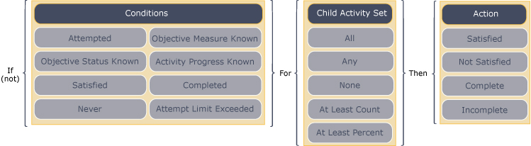

Overview
Cluster activities are not associated with content objects; therefore there is no direct way for learner progress information to be applied to a cluster activity. The Instructional Management Systems Simple Sequencing (IMS SS) Specification provides a way to define how learner progress for cluster activities is to be evaluated. A set of zero or more rollup rules may be applied to a cluster activity and the rules are evaluated during the overall rollup process.
Each rollup rule consists of:
- a set of child activities to consider
- a set of conditions evaluated against the tracking information of the included child activities
- a corresponding action that sets the cluster’s tracking status
information if the set of conditions evaluates to
True
Rollup rules have no effect when defined on a leaf activity.
